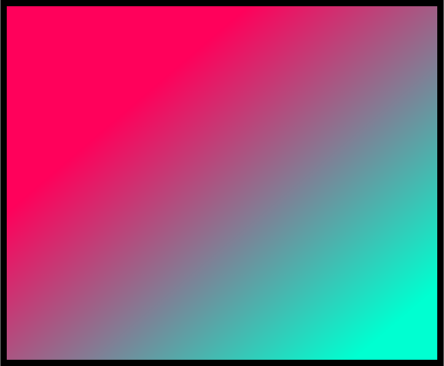

Ingredients
1 c. packed brown sugar
3/4 c. granulated sugar
1c. butter, softened
1 tsp. vanilla extract
2 eggs
2 1/2 c. all-purpose flour
3/4 tsp. salt
3/4 tsp. baking soda
2 c. whole M&M'S® plain candies
Directions
Preheat oven to 375°F.
Beat sugars and butter in large bowl on medium speed until fluffy, about 5 minutes. Beat in vanilla and eggs; beat in flour, salt and baking soda on low speed. Stir in candies. Drop dough by teaspoon about 2 inches apart onto ungreased cookie sheet. Flatten slightly with fork.
Bake until edges are light brown, 8 to 11 minutes. Let stand 3 to 4 minutes before removing from cookie sheet.
Cookies made with butter will flatten more and tend to be somewhat darker along the edges, but are more flavorful. Watch carefully to prevent burning.
If you prefer higher cookies that spread less, vegetable shortening may be substituted for the butter, or use half of each. A higher temperature (400°F will help cookies set before spreading).
M&M